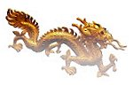

|
Sur le chemin
|
|  |
Les signes de bon augure du dragon
|
Par le frère initié Hsu He-yi, Tainan, Formose
Bien que dans le passé j'aie étudié beaucoup d'écritures religieuses et de sutras bouddhistes, je n'ai jamais compris réellement leurs doctrines. Un jour, j'ai entamé par hasard une conversation avec un voisin âgé et j'ai été très impressionné par les incidents miraculeux qu'il m'a raconté du Maître Suprême Ching Hai. Je ne connaissais pratiquement rien d'Elle et lui demandais quelques livres qui pourraient m'aider à mieux La connaître. Ainsi, mon voisin m'a prêté la Clé de l'Illumination immédiate, Volume I, dont la vue même m'a rempli de joie, et je l'ai lu dès que j'ai eu le temps.
Un jour, alors que j'étais au milieu du livre, j'ai eu dans un rêve une vision merveilleuse. J'ai vu un dragon de bon augure vert et doré planant haut dans le ciel du côté ouest de ma maison, près de la résidence de mon voisin. Le dragon semblait puissant et majestueux alors qu'il tournait autour de la maison trois fois dans le sens des aiguilles d'une montre, avec un bolide argenté et doré guidant sa voie. Soudain, mes voisins ont commencé à faire la fête joyeusement en allumant des pétards et en me félicitant. Je me suis réveillé et j'ai réalisé que c'était seulement un rêve. Mais, je restais encore très heureux dans mon coeur d'avoir vu ce signe de bon augure !
Après avoir lu le livre de Maître, je n'ai plus osé manger de viande, parce que je sentais que je mangerais ma propre chair. En outre, je surmontais fructueusement ma dépendance au tabac, à l'alcool, et au jeu, et étais extrêmement béni de recevoir l'initiation le 5 mai 2000, après avoir écouté la conférence de Maître au Stade du conté de Taoyuan. Auparavant, j'allais souvent à des réunions avec l'excuse d'accomplir mes devoirs d'affaires. A ces réunions je consommais beaucoup de viande et d'alcool, et ce n'était pas inhabituel pour moi de rentrer à la maison complètement ivre. Quoique les membres de ma famille ne soient pas initiés, ils sont très heureux de voir le changement drastique en moi après être devenu végétarien et un pratiquant de la Méthode Guan Yin. En fait, ils sont si reconnaissants qu'ils comptent demander un rituel de grâce !
|
Sur le chemin |
|
| * | Le Monde en Or |
| * | Les signes de bon augure du dragon |
| * | L'Ancien Maître insondable |
|
Le succès ou l'échec en ce monde n'est pas l'objectif important. Parfois l'échec est le succès et le succès est simplement l'échec. Nous avons besoin de l'oeil de sagesse pour juger vraiment. ~
Prononcé par |
|
|
Revue n° 113 |
|